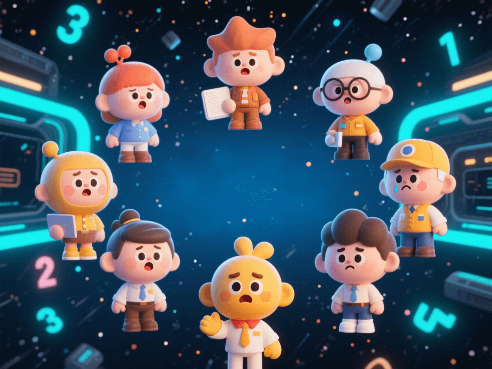

10 Jobs That Will Disappear by 2030: Are AI Screenwriters and Quantum Programmers on the List?
PeaceLove.Top Insights :2025-04-19
🌍 The Future of Work: Technological Revolution Is Reshaping the Job World
With the rapid development of technology, many jobs once considered 'iron rice bowls' may quietly disappear before 2030. Driven by technologies such as artificial intelligence, quantum computing, and automation, the landscape of our workplace is undergoing profound changes. Many occupations are not only at risk of disappearing, but some emerging occupations are also challenging traditional work forms! 👾
🔮 The 10 Disappearing Jobs: How AI and Automation Are Changing the Work World?
1. AI Screenwriters: The 'Artificial Brains' for Creating Stories 📝
With the rise of artificial intelligence in the creative field, AI screenwriters have become one of the most controversial occupations in the future. Through deep learning and natural language processing technologies, AI can already write scripts with complete structures and rich emotions. In the future, AI screenwriters may become the mainstream in movie and TV drama production. Although human assistance may still be needed, the improvement of independent creation ability poses great competitive pressure on this occupation.
2. Quantum Programmers: The Peak of Quantum Computer Programming 💻
Quantum computers have more powerful computing capabilities than traditional computers and are expected to have a profound impact on fields such as data processing and artificial intelligence before 2030. However, due to the complexity of quantum computing, programmers must have professional knowledge of quantum mechanics and computer science. With the development of quantum technology, more intelligent algorithms and platforms may replace the work of traditional quantum programmers in the future, reducing the dependence on manual labor.
3. Taxi Drivers: The Rise of Autonomous Driving 🚗
The development of autonomous driving technology is gradually replacing traditional taxi drivers and truck drivers. By 2030, with the popularization of autonomous driving technology, more and more driver jobs will be replaced by automation. Although this change may bring about employment transformation, it may also cause many drivers to face the risk of job disappearance.
4. Data Entry Operators: Replaced by Automated Data Processing Tools 📊
Currently, data entry operators manually input and organize a large amount of information. With the continuous improvement of OCR (Optical Character Recognition) technology and other intelligent data processing tools, this work will gradually be replaced by automated systems. By 2030, the demand for data entry operators will decline significantly or even disappear.
5. Telephone Customer Service Representatives: Fully Replaced by AI Customer Service 📞
The rapid development of artificial intelligence has made robot customer service more and more intelligent, capable of handling various situations from simple consultations to complex problems. It is expected that by 2030, most telephone customer service jobs will be replaced by virtual assistants and intelligent customer service systems, which will greatly reduce the demand for human resources.
6. Traditional Retail Clerks: Online Shopping and Automatic Check-out Systems 🛍️
With the rapid development of e-commerce and the maturity of unmanned store technology, traditional retail clerks are facing great pressure. Unmanned cash registers, automated inventory management, and intelligent recommendation systems will cause many physical store clerks to lose their jobs, and traditional positions in the retail industry will gradually disappear by 2030.
7. Financial Auditors: Accurately Replaced by AI Audit Systems 📈
AI and machine learning technologies are gradually entering the field of financial auditing, capable of automatically handling tasks such as account processing, financial auditing, and risk assessment. By 2030, AI auditors may fully replace traditional manual auditing positions, improving work efficiency while reducing human errors.
8. Journalists: Automated News Generation 📰
With the continuous improvement of AI news writing tools and deep learning algorithms, more and more news articles will be automatically generated by machines. Although AI cannot completely replace journalists' creative thinking and human-oriented reporting, machines have already performed quite well in some routine reporting and data analysis. By 2030, some traditional journalist positions may face disappearance or transformation.
9. Factory Assembly Line Workers: Replaced by Industrial Robots 🏭
With the popularization of industrial robots and automated equipment, more and more factory assembly line jobs will be replaced by robots. This change will greatly improve production efficiency and safety, but it will also lead to the disappearance of a large number of factory worker positions, especially in the manufacturing and assembly industries.
10. Translators: Rapid Progress of AI Translation 🌐
AI translation tools (such as Google Translate and DeepL) are improving at an amazing speed, capable of providing high-quality multilingual translation services. Although human translation still has an irreplaceable role in some professional fields, with the improvement of AI translation technology, the demand for ordinary translators in some basic fields will decline significantly.
🌱 Behind the Career Changes: Opportunities and Challenges Brought by Technology
Technological Impact:
AI and automation technologies are causing large-scale disruptions to existing jobs. Many traditional occupations will be replaced by technology, but at the same time, emerging technology-related positions are emerging, such as data scientists, AI ethics experts, and unmanned vehicle maintenance technicians. The rise of these technologies requires the existing workforce to continuously undergo career transformation and skill improvement.
Career Transformation and Retraining:
As the trend of technological replacement accelerates, the future labor market will pay more attention to the flexibility and adaptability of skills. Workers need to continuously learn new technologies and improve their cross-field abilities to meet the needs of emerging industries. For example, transitioning from traditional retail to e-commerce or from manual translation to AI-assisted translation.
🌍 Conclusion: In an Era of Change, Opportunities and Challenges Coexist
The job world in 2030 will be full of uncertainties, but also full of innovation and opportunities. Facing the drastic changes brought by technology, each of us needs to maintain a flexible mindset, adapt to the changes, and embrace the new career ecosystem of the future 🌟. With the continuous progress of AI and quantum technologies, profound changes will take place in human work and life. This is not only a challenge but also a moment to create new opportunities! 💡